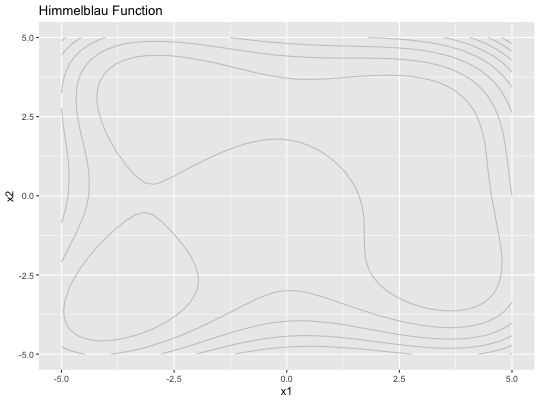
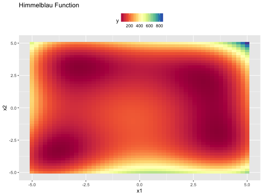
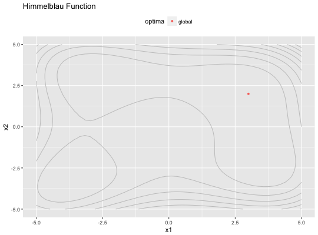
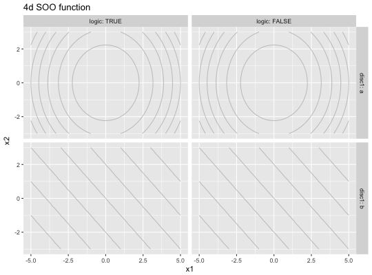
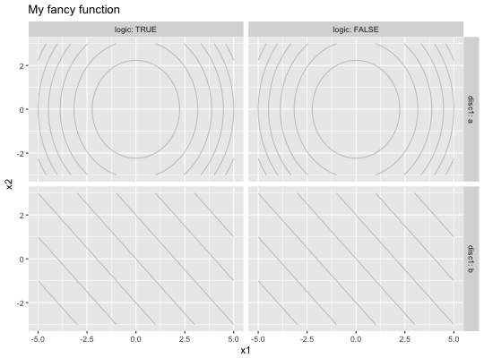

This function expects a smoof function and returns a ggplot object depicting
the function landscape. The output depends highly on the decision space of the
smoof function or more technically on the ParamSet
of the function. The following destinctions regarding the parameter types are
made. In case of a single numeric parameter a simple line plot is drawn. For
two numeric parameters or a single numeric vector parameter of length 2 either a
contour plot or a heatmap (or a combination of both depending on the choice
of additional parameters) is depicted. If there are both up to two numeric
and at least one discrete vector parameter, ggplot facetting is used to
generate subplots of the above-mentioned types for all combinations of discrete
parameters.
# S3 method for smoof_function autoplot(x, show.optimum = FALSE, main = getName(x), render.levels = FALSE, render.contours = TRUE, log.scale = FALSE, length.out = 50L, ...)
| x | [ |
|---|---|
| show.optimum | [ |
| main | [ |
| render.levels | [ |
| render.contours | [ |
| log.scale | [ |
| length.out | [ |
| ... | [any] Not used. |
[ggplot]
Keep in mind, that the plots for mixed parameter spaces may be very large and computationally expensive if the number of possible discrete parameter values is large. I.e., if we have d discrete parameter with each n_1, n_2, ..., n_d possible values we end up with n_1 x n_2 x ... x n_d subplots.
library(ggplot2) # Simple 2D contour plot with activated heatmap for the Himmelblau function fn = makeHimmelblauFunction() print(autoplot(fn))print(autoplot(fn, render.levels = TRUE, render.contours = FALSE))print(autoplot(fn, show.optimum = TRUE))# Now we create 4D function with a mixed decision space (two numeric, one discrete, # and one logical parameter) fn.mixed = makeSingleObjectiveFunction( name = "4d SOO function", fn = function(x) { if (x$disc1 == "a") { (x$x1^2 + x$x2^2) + 10 * as.numeric(x$logic) } else { x$x1 + x$x2 - 10 * as.numeric(x$logic) } }, has.simple.signature = FALSE, par.set = makeParamSet( makeNumericParam("x1", lower = -5, upper = 5), makeNumericParam("x2", lower = -3, upper = 3), makeDiscreteParam("disc1", values = c("a", "b")), makeLogicalParam("logic") ) ) pl = autoplot(fn.mixed) print(pl)# Since autoplot returns a ggplot object we can modify it, e.g., add a title # or hide the legend pl + ggtitle("My fancy function") + theme(legend.position = "none")